Visual proof — Omarchy vs Gnomarchi
Every gap-map feature as a labeled side-by-side. Left = original Omarchy (Hyprland/Quickshell). Right = Gnomarchi (GNOME/Arch D1′). Click any shot to enlarge.
Omarchy (reference)
Gnomarchi (adapted)
Orange border = Omarchy · Blue border = Gnomarchi
paired features 43
pairs validated 84
pairs unreviewed 0
pairs invalid 0
one-sided 0
empty features 0
features 43
Status 2026-10-21: W0–W3 + optionals closed — 43 paired features, 84 pairs validated, 0 empty. Sticky notice banners silenced via gnomarchi notice silence before each capture frame.
How to read: Orange = Omarchy source · Blue = Gnomarchi. Tray panels must be top-right popups (not full Settings). Regen: python3 scripts/regen-visual-proof-gallery.py · Capture: PARITY_CAPTURE=1 scripts/parity-capture-desktop-proof.sh · Closeness/W3: parity-capture-closeness-proof.sh / parity-capture-w3-residuals.sh.
By feature (43)
manual.navigation paired navigation / hotkeys navigating
Gap-map needs: paperwm-tiling-overview
Desktop overview / clean desktop pair validated
Omarchy validated
Click to enlarge omarchy-manual/M-37-desktop-clean.png
Gnomarchi validated
Click to enlarge parity-proof/desktop/desktop-clean.jpg
Framing: fullscreen Omarchy: Hyprland, no dock, Quickshell topbar with workspace numbers Gnomarchi: GNOME Shell topbar; PaperWM tiling is opt-in
Menu / launcher entry pair validated
Omarchy validated
Click to enlarge omarchy-manual/M-08-menu-root.png
Gnomarchi validated
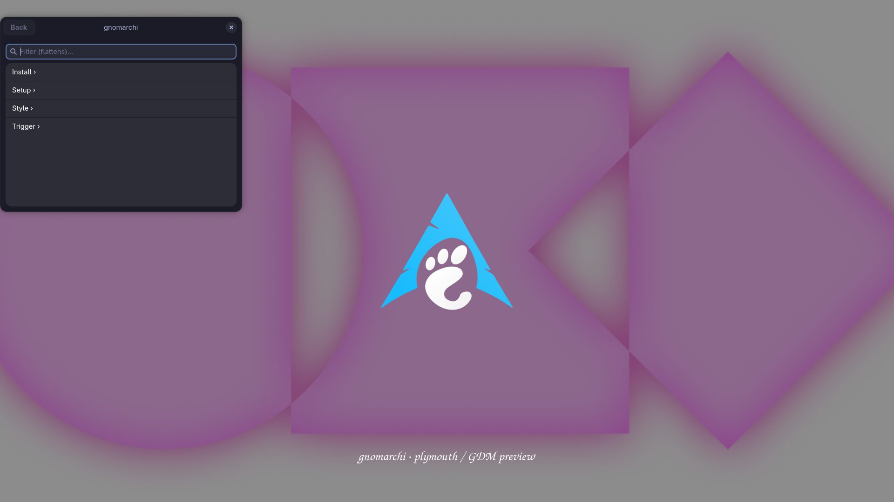
Click to enlarge parity-proof/desktop/menu-root.jpg
Framing: centered Omarchy: hierarchical Go… menu Gnomarchi: flat Command palette (leaf paths)
manual.top-bar paired the-top-bar
Gap-map needs: V-04-agents-popup, V-05-weather-popup, V-06-update-popup, V-07-tailscale-popup, V-27-bottom-bar, V-15-panel-theme-A-vs-B
Top bar / tray pair validated
Omarchy validated
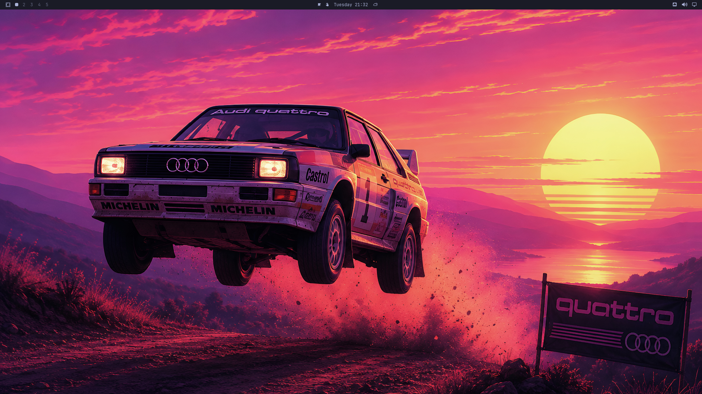
Click to enlarge omarchy-manual/M-01-topbar.png
Gnomarchi validated
Click to enlarge parity-proof/plugins/topbar-strip.png
Framing: fullscreen Omarchy: Quickshell workspaces/clock/tray Gnomarchi: GNOME Shell + AppIndicator tray
Agents chip / panel
Omarchy missing
missing Omarchy shot not captured
Gnomarchi validated
Click to enlarge parity-v2/V-04-panel-agents-chip.png
Framing: fullscreen Gnomarchi-only agents extension
Optional bottom bar (dash-to-panel)
Omarchy missing
missing Omarchy shot not captured
Gnomarchi validated
Click to enlarge parity-v2/V-27-dash-to-panel-optional.png
Framing: fullscreen Gnomarchi opt-in; Omarchy has no dock
manual.bar-panels paired the-top-bar panels
Gap-map needs: panel-audio, panel-network, panel-bluetooth, panel-display, panel-power, panel-calendar
Audio pair validated
Omarchy validated
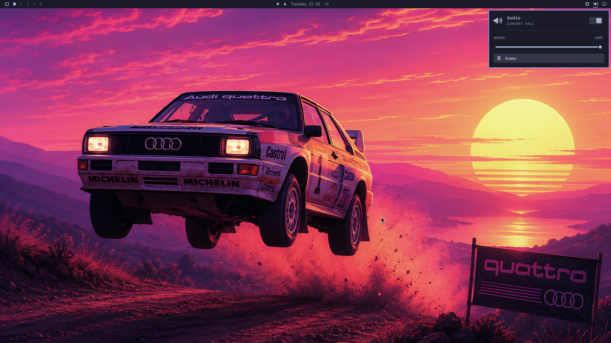
Click to enlarge omarchy-manual/M-02-audio.png
Gnomarchi validated
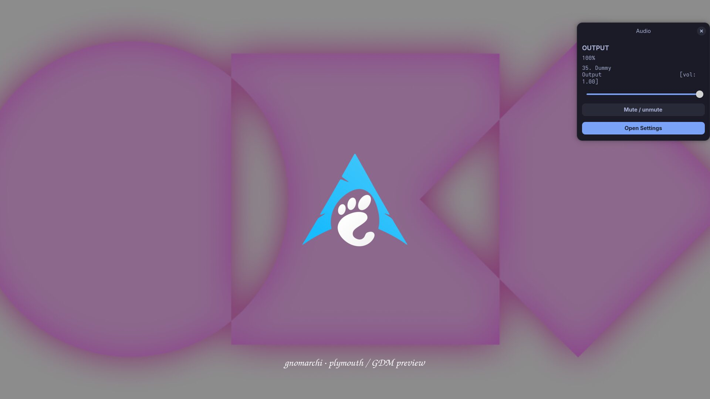
Click to enlarge parity-proof/desktop/panel-audio.jpg
Framing: tray-popup Both: compact popup under top-right tray (not full Settings) Omarchy: Quickshell Audio + volume slider Gnomarchi: gnomarchi panel audio (GTK mini) — volume via wpctl
Network pair validated
Omarchy validated
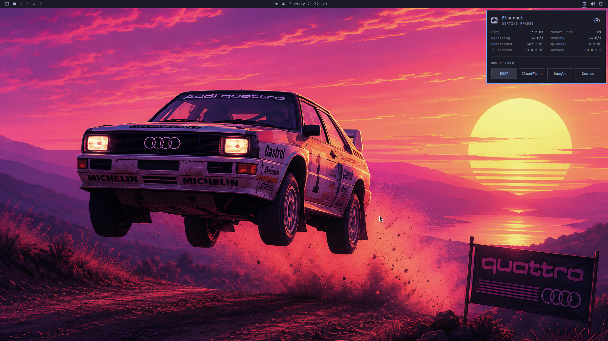
Click to enlarge omarchy-manual/M-03-network.png
Gnomarchi validated
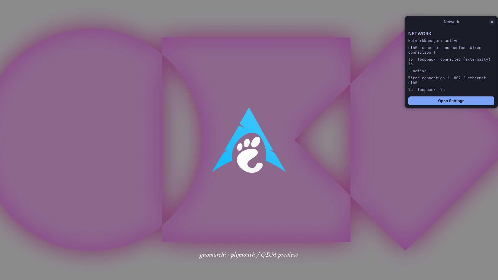
Click to enlarge parity-proof/desktop/panel-network.jpg
Framing: tray-popup Both: top-right tray popup Omarchy: ping/throughput/DNS buttons Gnomarchi: NetworkManager state + ip -br (requires NM installed)
Bluetooth pair validated
Omarchy validated
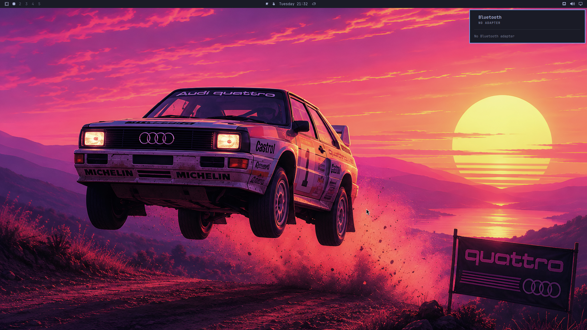
Click to enlarge omarchy-manual/M-04-bluetooth.png
Gnomarchi validated
Click to enlarge parity-proof/desktop/panel-bluetooth.jpg
Framing: tray-popup Both: top-right tray popup; both show NO ADAPTER in VM Omarchy: Quickshell; Gnomarchi: gnomarchi panel bluetooth
Power pair validated
Omarchy validated
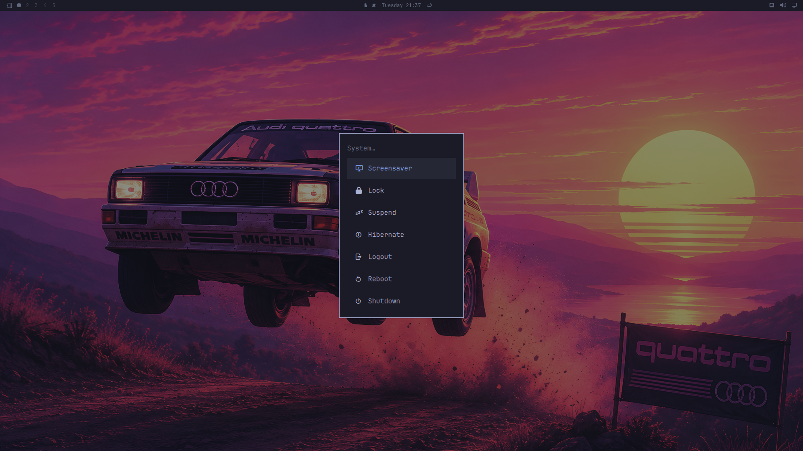
Click to enlarge omarchy-manual/M-05b-menu-system-power.png
Gnomarchi validated
Click to enlarge parity-proof/desktop/panel-power.jpg
Framing: tray-popup Omarchy source is menu System→power (M-05 tray capture failed) Gnomarchi: top-right gnomarchi panel power
Clock / calendar pair validated
Omarchy validated
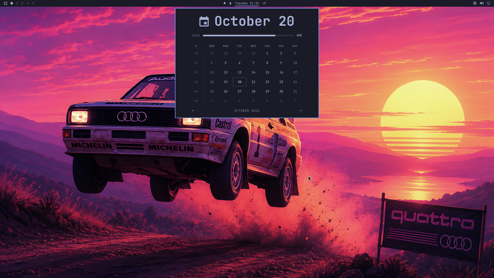
Click to enlarge omarchy-manual/M-06-clock.png
Gnomarchi validated
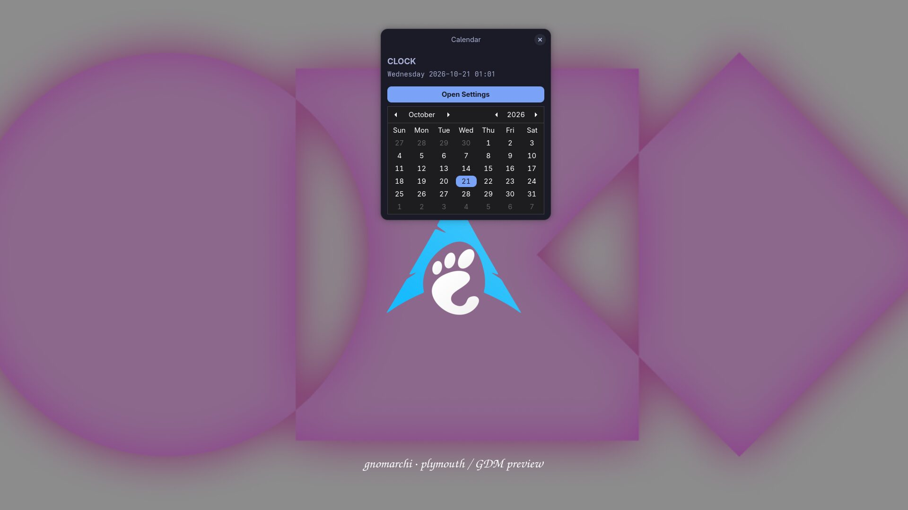
Click to enlarge parity-proof/desktop/panel-calendar.jpg
Framing: tray-popup Omarchy: Quickshell clock under topbar center Gnomarchi: gnomarchi panel calendar (top-right mini + Gtk.Calendar)
Display
Omarchy missing
missing Omarchy shot not captured
Gnomarchi validated
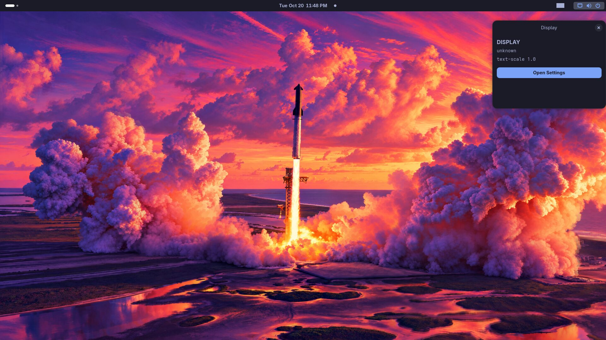
Click to enlarge parity-proof/desktop/panel-display.jpg
Framing: tray-popup Gnomarchi tray popup; Omarchy uses hyprland monitors (no M-shot)
manual.themes paired themes
Gap-map needs: theme-picker-all-24, theme-preview-midnight-harbor, theme-A-vs-B-gtk-chrome
Theme switcher / picker pair validated
Omarchy validated
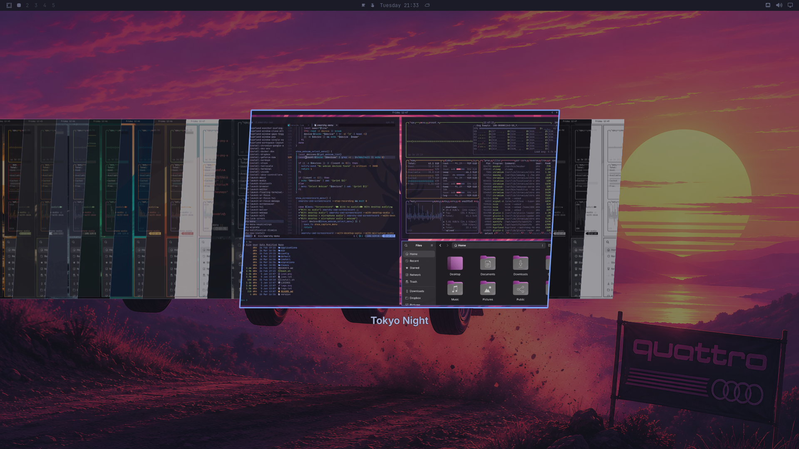
Click to enlarge omarchy-manual/M-14-theme-switcher.png
Gnomarchi validated
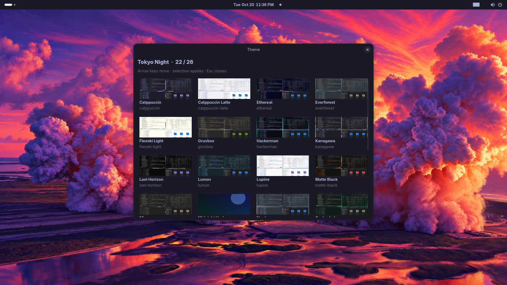
Click to enlarge parity-proof/desktop/theme-picker.jpg
Framing: centered Omarchy: Style menu → theme carousel Gnomarchi: gnomarchi theme pick (Themes window)
Theme carousel (parity-v2) pair validated
Omarchy validated
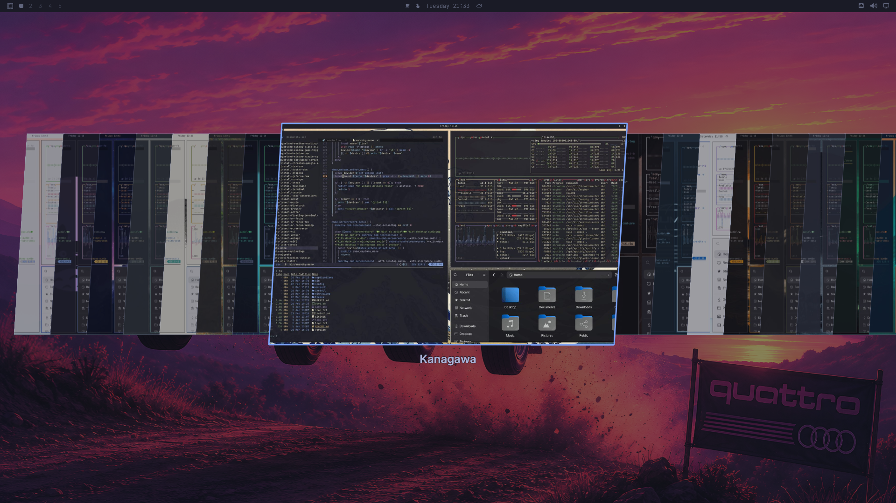
Click to enlarge omarchy-manual/M-14b-theme-switcher-mid.png
Gnomarchi validated
Click to enlarge parity-v2/V-09-style-theme-carousel.png
Framing: centered Alternate Gnomarchi carousel capture from parity-v2 matrix
Tokyo Night applied pair validated
Omarchy validated
Click to enlarge omarchy-manual/M-14b-theme-switcher-mid.png
Gnomarchi validated
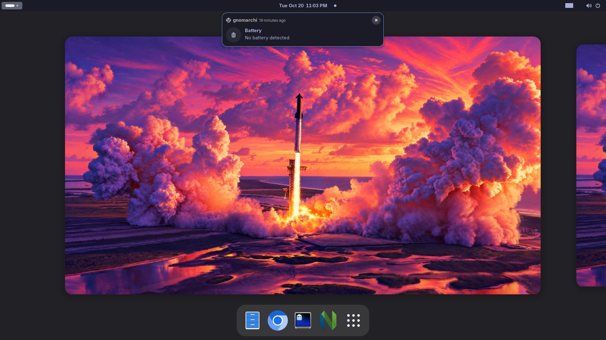
Click to enlarge parity-proof/theme/theme-tokyo-night.jpg
Same pack id; GNOME applies via gsettings + CSS, not hyprland.conf
Nord applied
Omarchy missing
missing Omarchy shot not captured
Gnomarchi validated
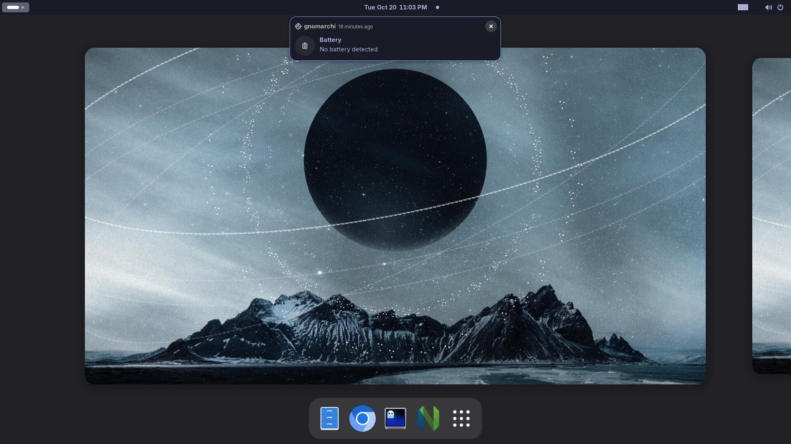
Click to enlarge parity-proof/theme/theme-nord.jpg
Gnomarchi GTK/shell after nord set
Gruvbox applied
Omarchy missing
missing Omarchy shot not captured
Gnomarchi validated
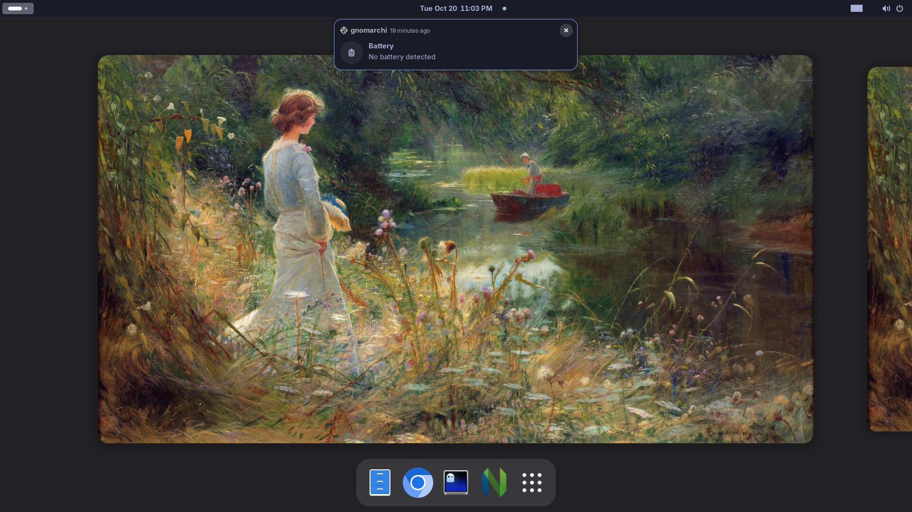
Click to enlarge parity-proof/theme/theme-gruvbox.jpg
Gnomarchi GTK/shell after gruvbox set
Catppuccin Latte (light) pair validated
Omarchy validated
Click to enlarge omarchy-manual/M-14c-theme-switcher-end.png
Gnomarchi validated
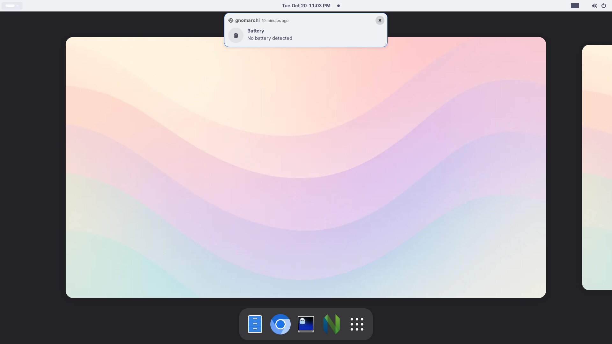
Click to enlarge parity-proof/theme/theme-catppuccin-latte.jpg
Light pack — GNOME color-scheme prefer-light
manual.backgrounds paired backgrounds / style
Gap-map needs: bg-next-before-after, video-wallpaper-on
Background switcher pair validated
Omarchy validated
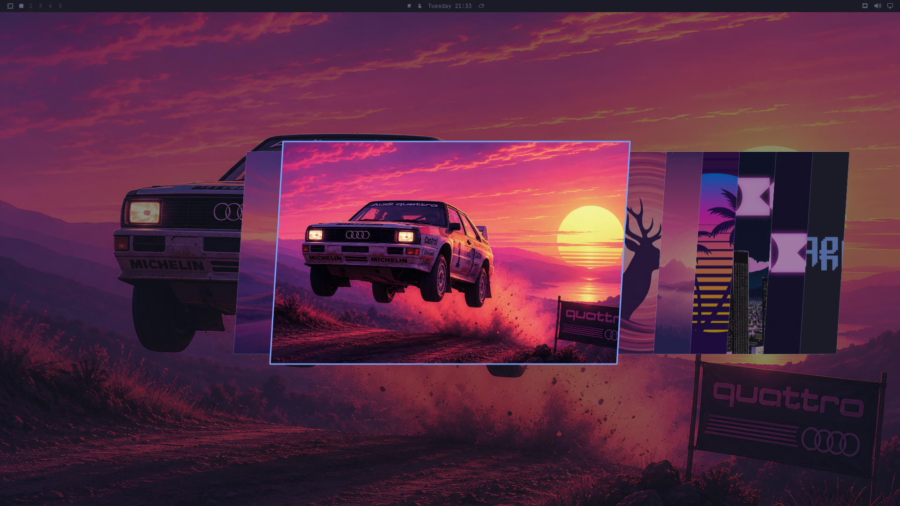
Click to enlarge omarchy-manual/M-15-bg-switcher.png
Gnomarchi validated
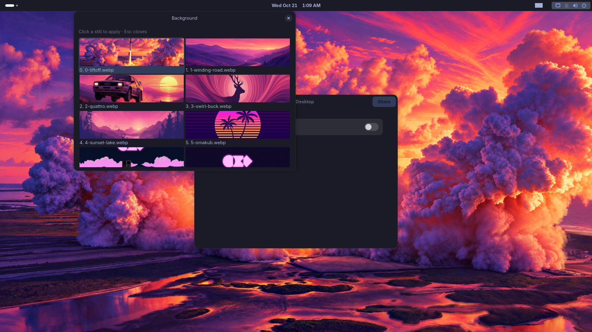
Click to enlarge parity-proof/closeness/theme-bg-pick.jpg
Framing: centered Omarchy: Style → background picker Gnomarchi: gnomarchi theme bg pick grid
Wallpaper after theme
Omarchy missing
missing Omarchy shot not captured
Gnomarchi validated
Click to enlarge parity-v2/V-13-theme-a-wallpaper.png
Framing: fullscreen Gnomarchi wallpaper emitter output
manual.hotkeys-core paired hotkeys
Gap-map needs: hotkey-cheatsheet, hotkey-theme, hotkey-bg, hotkey-menu
Keybindings reference pair validated
Omarchy validated
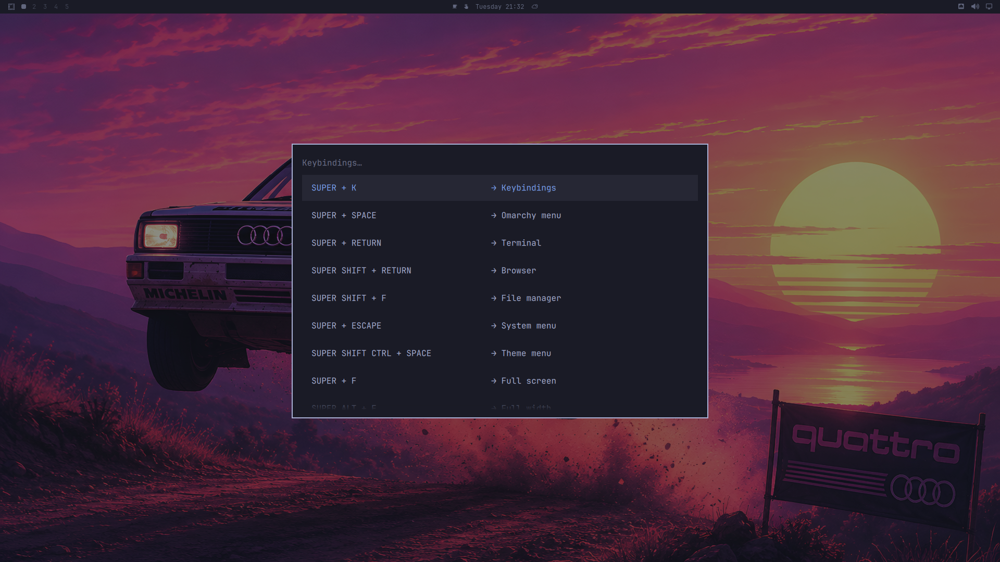
Click to enlarge omarchy-manual/M-07-keybindings.png
Gnomarchi validated
Click to enlarge parity-proof/desktop/keybindings.jpg
Omarchy: custom cheatsheet / hypr binds Gnomarchi: GNOME Settings → Keyboard (custom media-keys for menu/theme/bg)
manual.clipboard paired clipboard / universal clipboard
Gap-map needs: clipboard-history-ui
Clipboard history pair validated
Omarchy validated
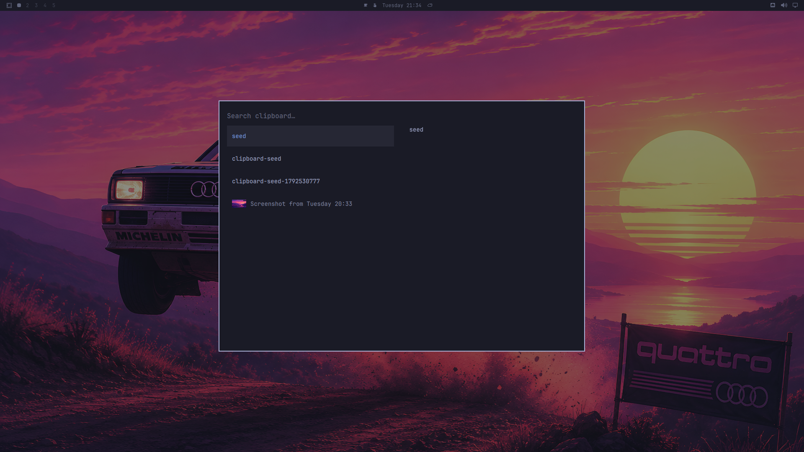
Click to enlarge omarchy-manual/M-17-clipboard.png
Gnomarchi validated
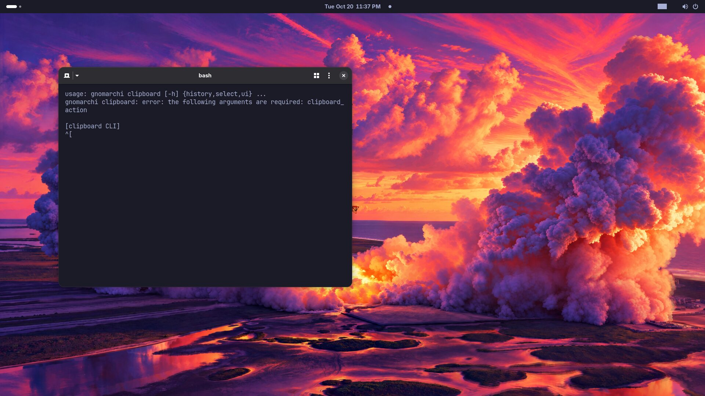
Click to enlarge parity-proof/desktop/clipboard.jpg
Framing: centered Omarchy: Quickshell/cliphist popup Gnomarchi: CLI in Ghostty (no GTK popup yet) — valid adapted surface, not tray-popup parity
manual.reminders paired reminders
Gap-map needs: remind-add-notification, remind-list
Reminders pair validated
Omarchy validated
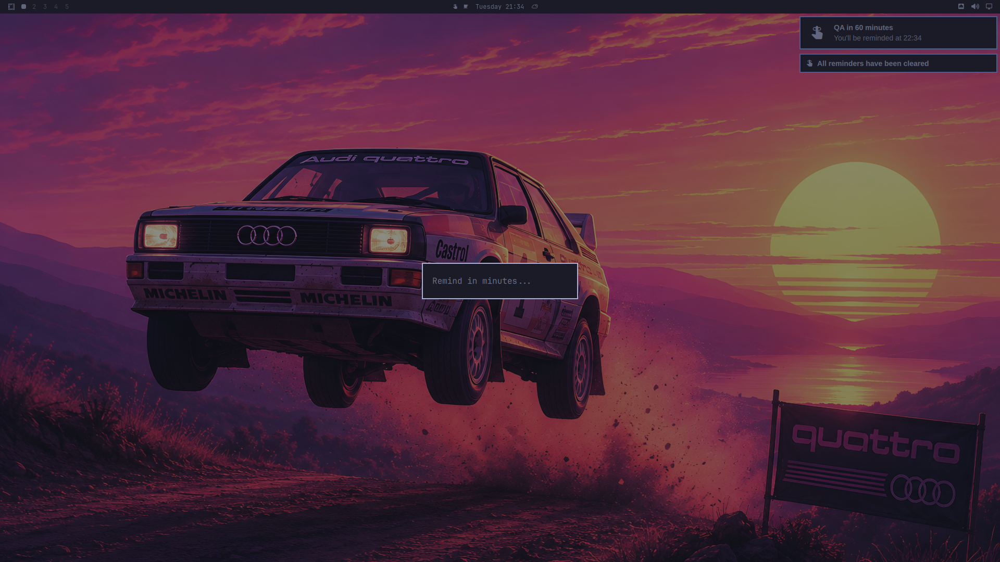
Click to enlarge omarchy-manual/M-18-reminders.png
Gnomarchi validated
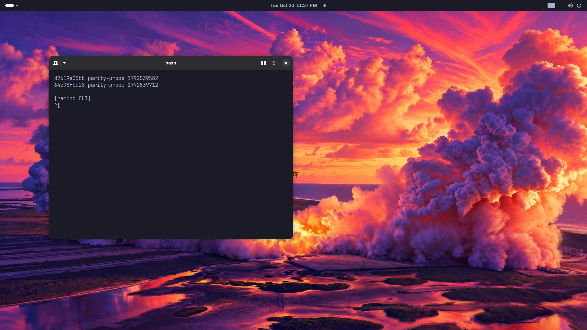
Click to enlarge parity-proof/desktop/reminders.jpg
Framing: centered Omarchy remind popup Gnomarchi: remind list in terminal — valid adapted surface
manual.notices paired notices
Gap-map needs: notice-time, notice-battery, notice-weather
Notice toast pair validated
Omarchy validated
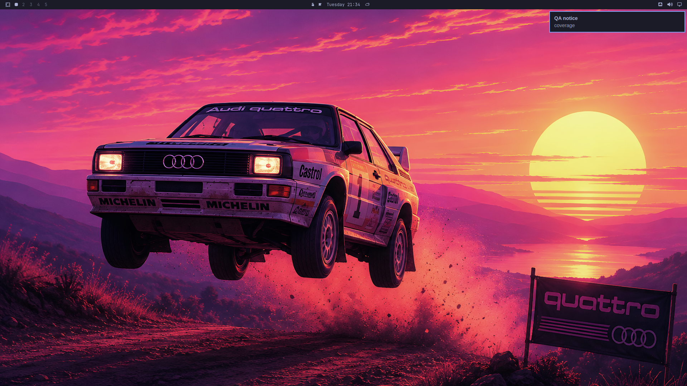
Click to enlarge omarchy-manual/M-19-notice-toast.png
Gnomarchi validated
Click to enlarge parity-proof/desktop/notice-time.jpg
Omarchy: Quickshell notice toast Gnomarchi: desktop notification via gnomarchi notice
Notice history pair validated
Omarchy validated
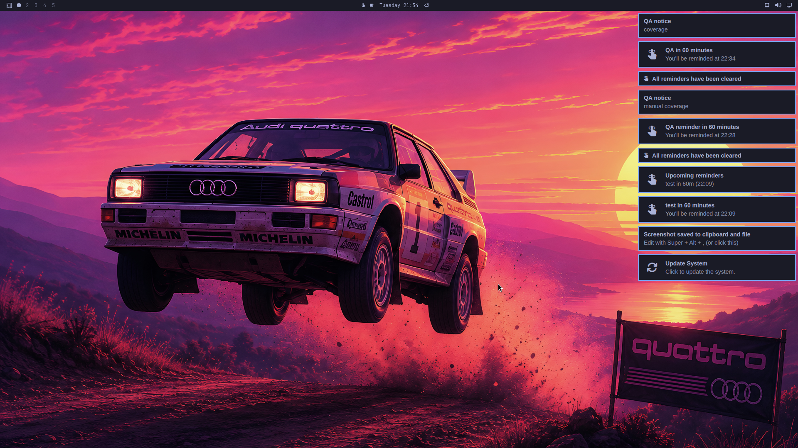
Click to enlarge omarchy-manual/M-19b-notice-history.png
Gnomarchi validated
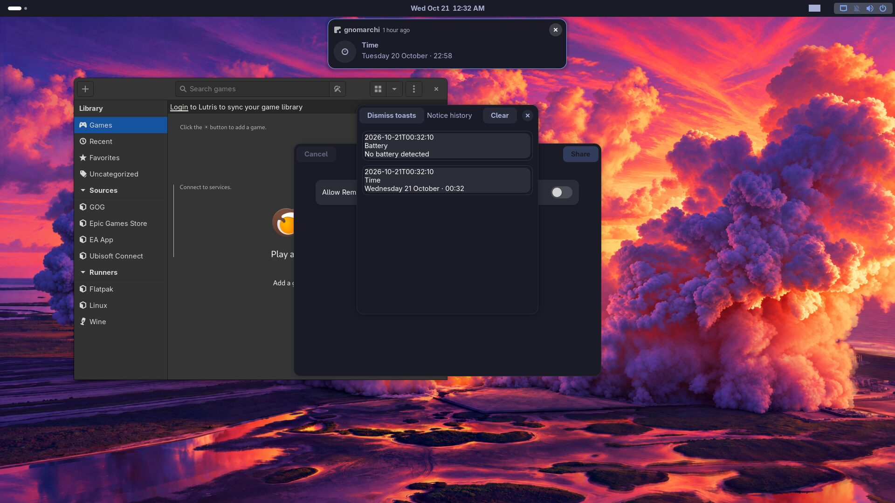
Click to enlarge parity-proof/desktop/notice-history.jpg
Framing: centered Omarchy: Quickshell notice history panel Gnomarchi: gnomarchi notice history (GTK list + dismiss/clear)
manual.capture paired capture
Gap-map needs: capture-shot, capture-ocr, capture-qr, capture-record
Screen capture pair validated
Omarchy validated
Click to enlarge omarchy-manual/M-07-keybindings.png
Gnomarchi validated
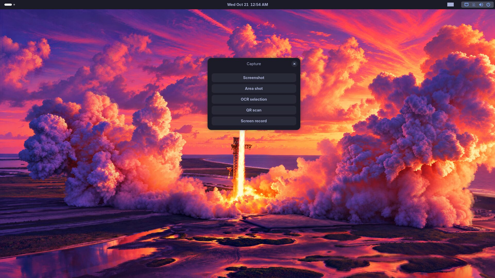
Click to enlarge parity-proof/desktop/capture-menu.jpg
Framing: centered Omarchy: hotkey sheet (Print bindings) Gnomarchi: gnomarchi capture menu (shot / area / OCR / QR / record)
manual.toggles paired toggles
Gap-map needs: mode-nightlight, mode-dnd, mode-stay-awake
Mode toggles (plugin live) pair validated
Omarchy validated
Click to enlarge omarchy-manual/M-01-topbar.png
Gnomarchi validated
Click to enlarge parity-proof/plugins/plugin.live.modes.png
Framing: fullscreen Gnomarchi SNI modes; Omarchy Quickshell toggles on top bar
manual.cli paired CLI (omarchy command)
Gap-map needs: cli-help
No Hyprland / GNOME session proof pair validated
Omarchy validated
Click to enlarge omarchy-manual/M-37-desktop-clean.png
Gnomarchi validated
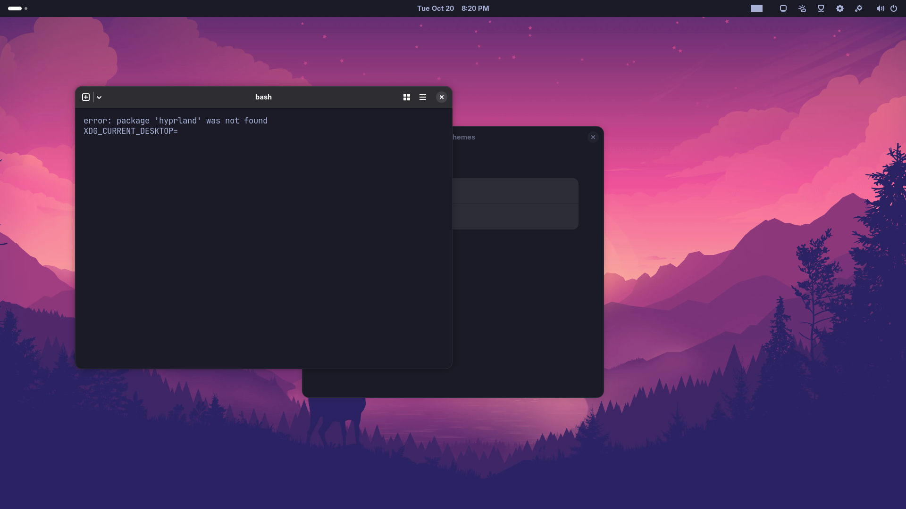
Click to enlarge parity-v2/V-24-no-hyprland.png
Framing: fullscreen D1′: Hyprland not ported; GNOME session is the substitute
manual.terminal paired terminal / Ghostty
Gap-map needs: ghostty-themed, V-11
Terminal pair validated
Omarchy validated
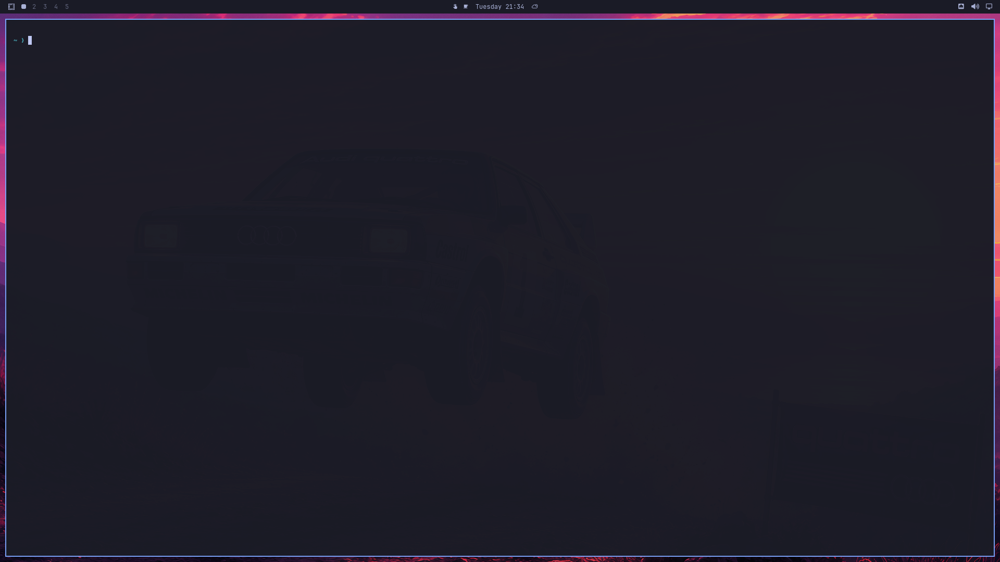
Click to enlarge omarchy-manual/M-22-foot.png
Gnomarchi validated
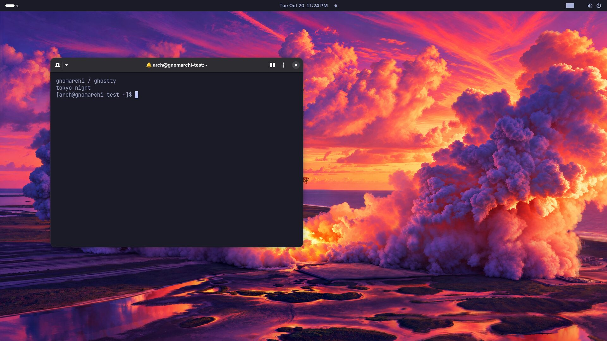
Click to enlarge parity-proof/desktop/terminal-ghostty.jpg
Omarchy default: foot Gnomarchi default: Ghostty (themed via pack) Window should be centered alone, overview off
manual.neovim paired neovim
Gap-map needs: nvim-themed, nvim-lazygit
Neovim pair validated
Omarchy validated
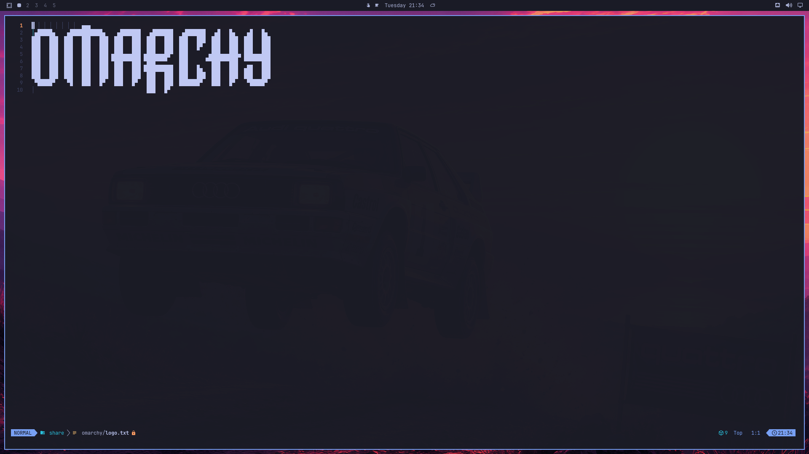
Click to enlarge omarchy-manual/M-23-nvim.png
Gnomarchi validated
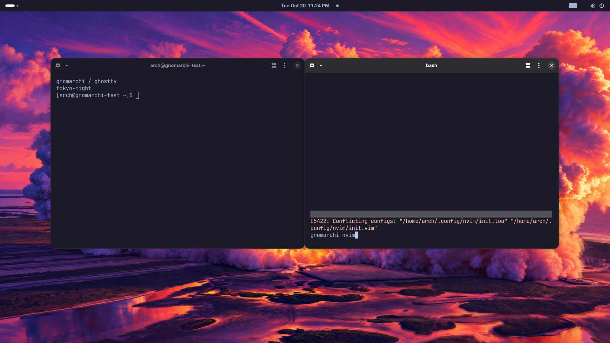
Click to enlarge parity-proof/desktop/neovim.jpg
Both themed nvim; host terminal differs (foot vs Ghostty)
manual.ai paired AI / agents
Gap-map needs: agents-window, agents-indicator-popup, V-16
Agents window pair validated
Omarchy validated
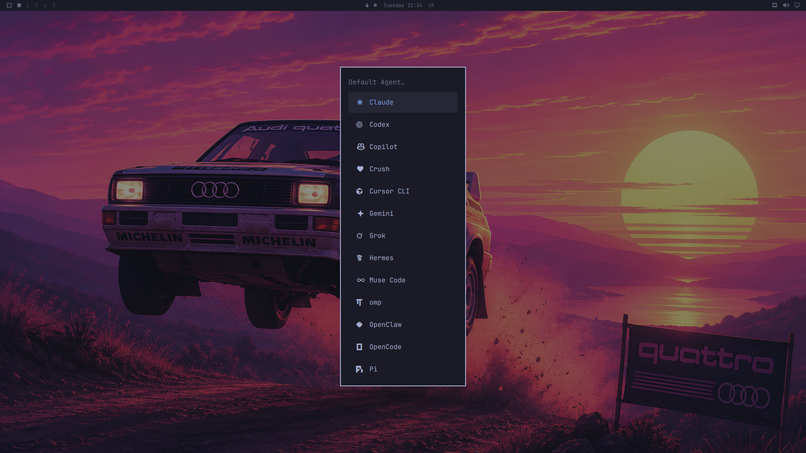
Click to enlarge omarchy-manual/M-21-agents.png
Gnomarchi validated
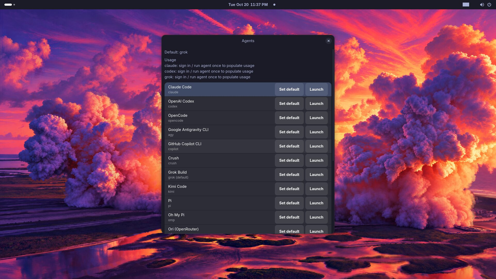
Click to enlarge parity-proof/desktop/agents-window.jpg
Framing: centered Omarchy agents UI over Hyprland Gnomarchi agents_window.py GTK — centered, single window
Agents live indicator
Omarchy missing
missing Omarchy shot not captured
Gnomarchi validated
Click to enlarge parity-proof/plugins/plugin.live.agents.png
Framing: fullscreen Gnomarchi AppIndicator agents plugin
manual.dev-tools paired dev tools
Gap-map needs: dev-docker, dev-lazygit, dev-tmux
Install / TUI tools menu pair validated
Omarchy validated
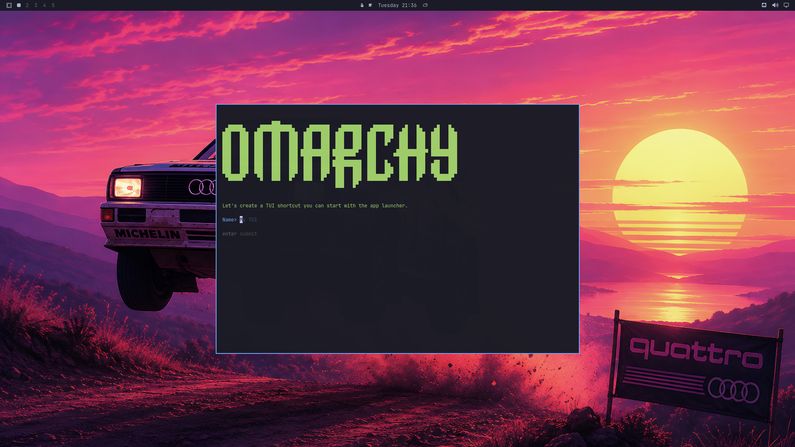
Click to enlarge omarchy-manual/M-35-menu-install-tui.png
Gnomarchi validated
Click to enlarge parity-proof/desktop/menu-install.jpg
Framing: centered Omarchy install TUI branch; Gnomarchi Install filter
manual.shell-tools paired shell-tools
Gap-map needs: shell-tools-ff, shell-tools-eza
Shell tools pair validated
Omarchy validated
Click to enlarge omarchy-manual/M-22-foot.png
Gnomarchi validated
Click to enlarge parity-proof/desktop/shell-tools.jpg
Framing: centered Omarchy foot + shell stack Gnomarchi: fzf/eza/zoxide/bat/fd/rg + tmux/bat theme emit
manual.tuis paired tuis
Gap-map needs: btop-activity, lazygit, fastfetch-about
btop pair validated
Omarchy validated
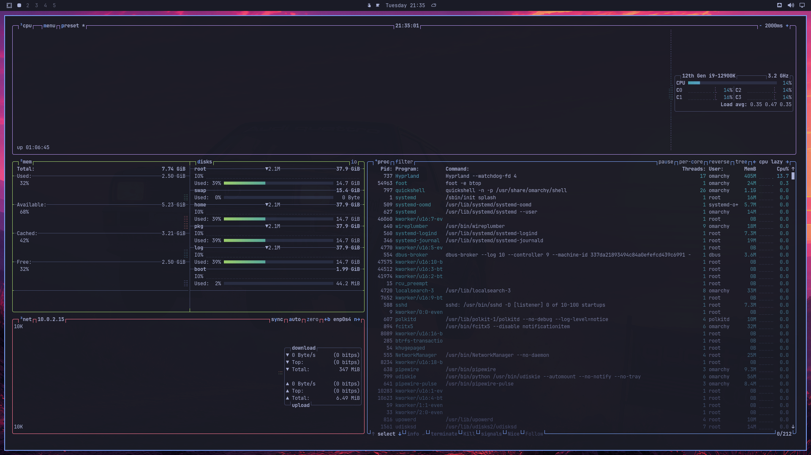
Click to enlarge omarchy-manual/M-24-btop.png
Gnomarchi validated
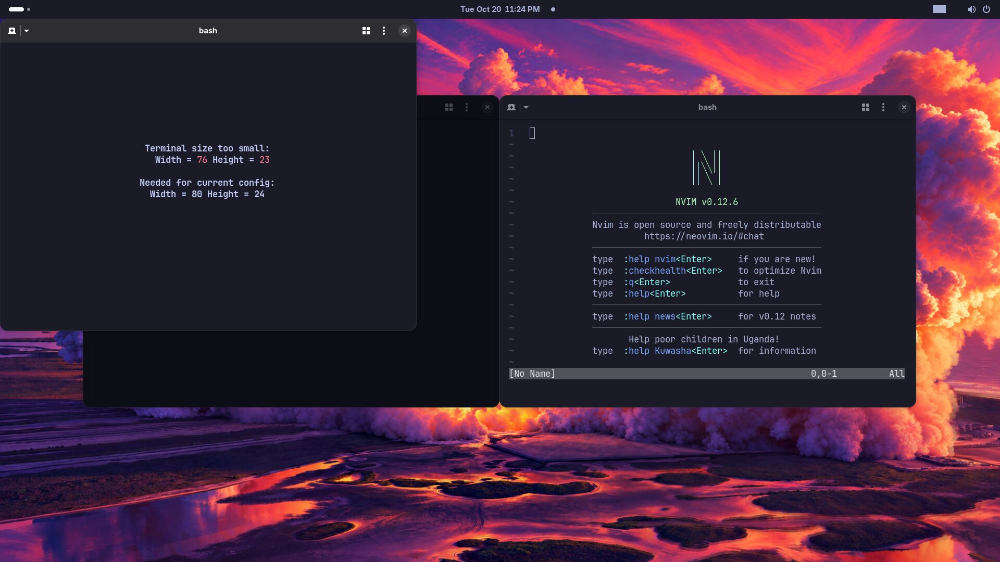
Click to enlarge parity-proof/desktop/tui-btop.jpg
Same btop; terminal host and border chrome differ
manual.guis paired guis
Gap-map needs: gnoma-write, gnoma-calc, gnoma-cut, nautilus, obsidian, localsend, libreoffice
Calculator pair validated
Omarchy validated
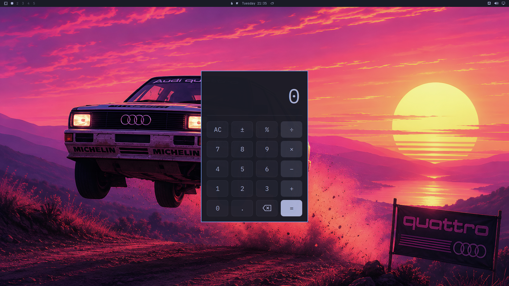
Click to enlarge omarchy-manual/M-26-omacalc.png
Gnomarchi validated
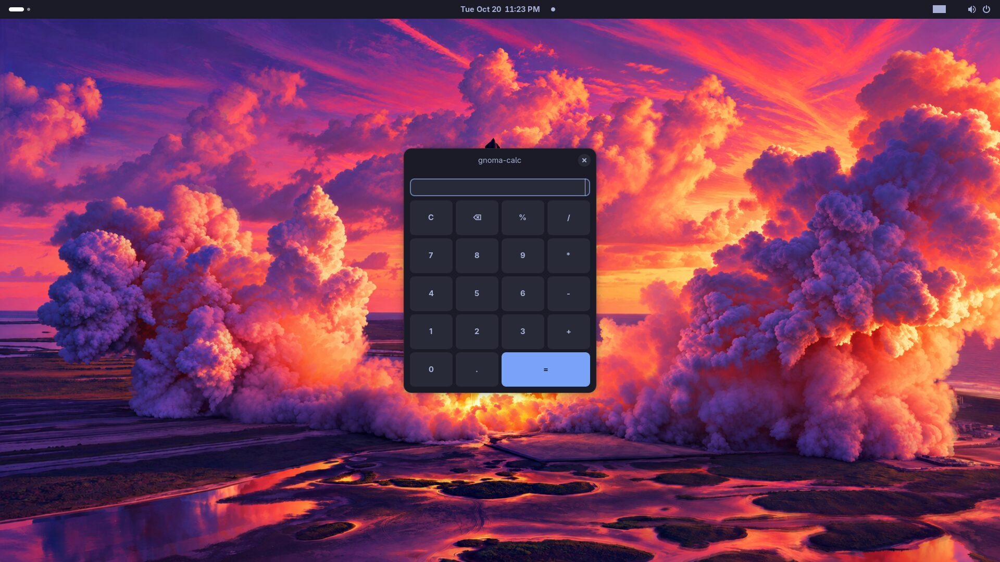
Click to enlarge parity-proof/desktop/app-calc.jpg
Framing: centered Omarchy: omacalc, borderless float, centered Gnomarchi: gnoma-calc with CSD titlebar — centered, overview off
Write pair validated
Omarchy validated
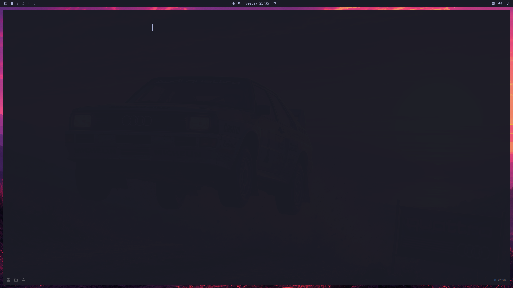
Click to enlarge omarchy-manual/M-27-omawrite.png
Gnomarchi validated
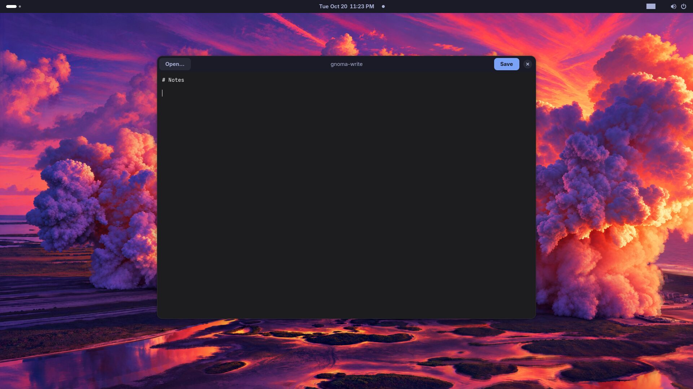
Click to enlarge parity-proof/desktop/app-write.jpg
Framing: centered omacalc→gnoma-write naming; GTK CSD vs Hyprland float rules
Cut pair validated
Omarchy validated
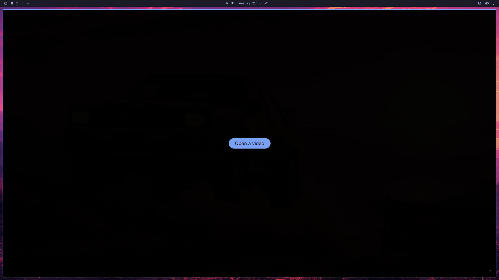
Click to enlarge omarchy-manual/M-28-omacut.png
Gnomarchi validated
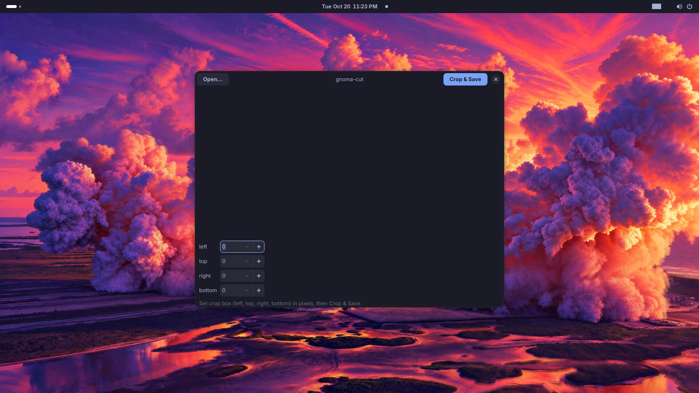
Click to enlarge parity-proof/desktop/app-cut.jpg
Framing: centered omacut → gnoma-cut
Files pair validated
Omarchy validated
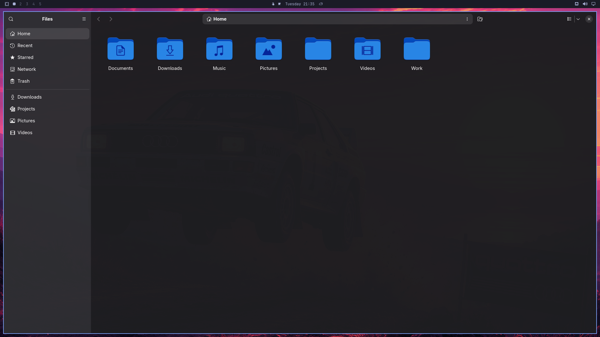
Click to enlarge omarchy-manual/M-29-files.png
Gnomarchi validated
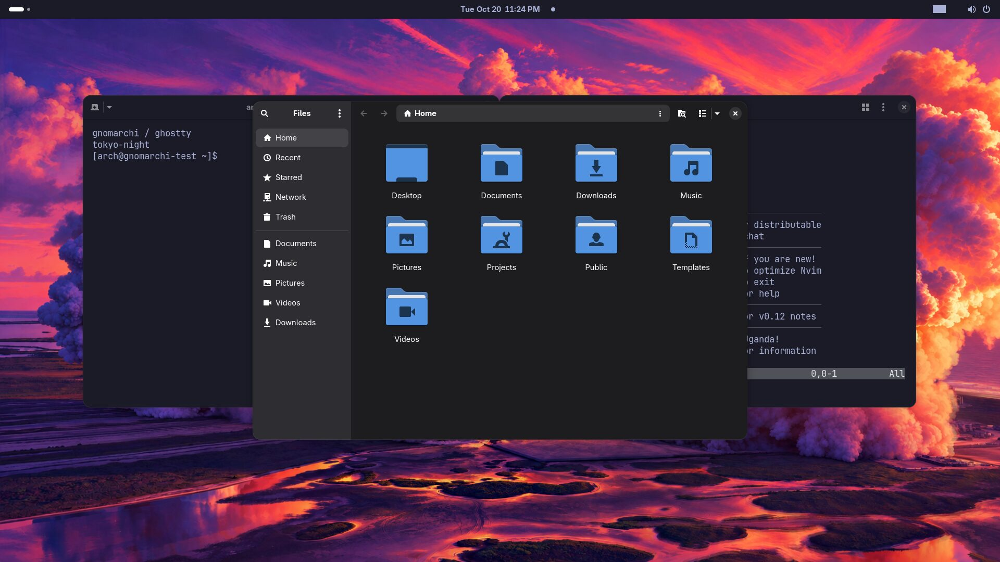
Click to enlarge parity-proof/desktop/files.jpg
Framing: centered Omarchy: Yaru/custom icons Gnomarchi: Papirus under GNOME Files
Obsidian pair validated
Omarchy validated
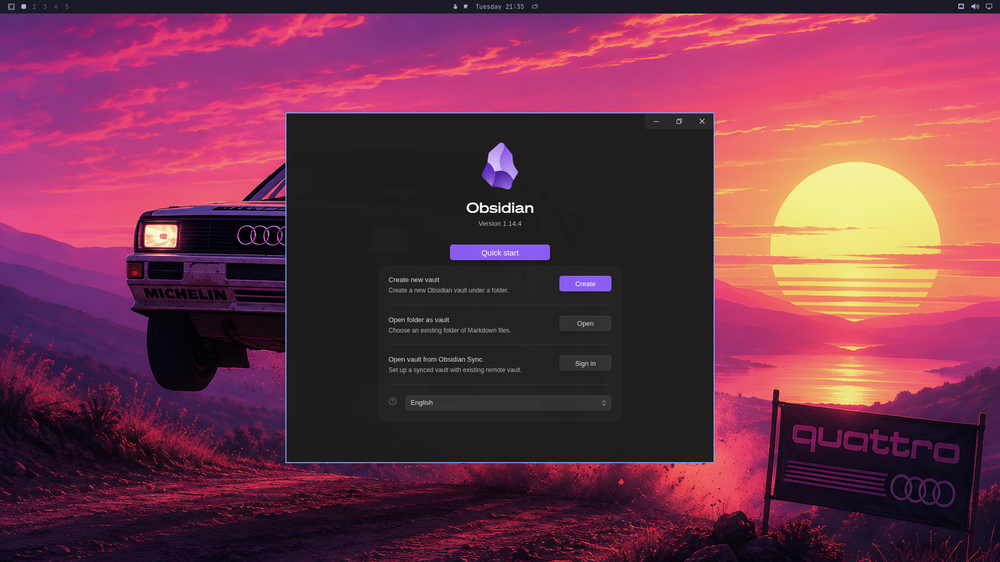
Click to enlarge omarchy-manual/M-30-obsidian.png
Gnomarchi validated
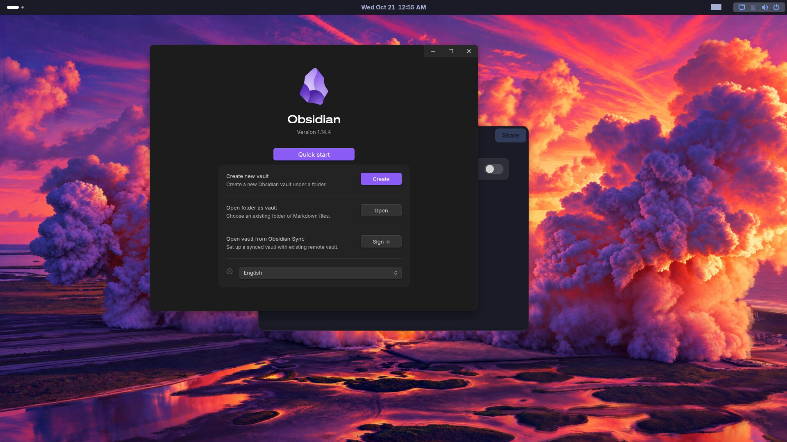
Click to enlarge parity-proof/desktop/app-obsidian.jpg
Framing: centered Optional Install › Service › Obsidian
Pinta pair validated
Omarchy validated
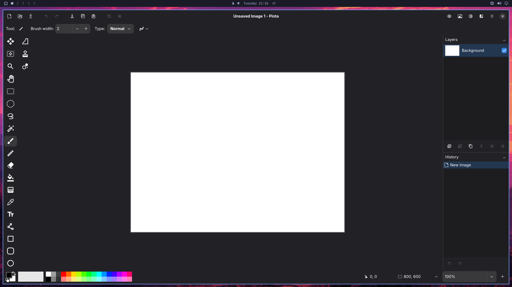
Click to enlarge omarchy-manual/M-32-pinta.png
Gnomarchi validated
Click to enlarge parity-proof/desktop/app-pinta.jpg
Framing: centered Optional Install › Service › Pinta
Icon pack (Papirus) proof pair validated
Omarchy validated
Click to enlarge omarchy-manual/M-29-files.png
Gnomarchi validated
Click to enlarge parity-proof/desktop/icons-apps.jpg
Omarchy: Yaru/custom folder icons in file manager Gnomarchi on Arch: Papirus-style folders + gnoma-calc side-by-side
manual.browsers paired browsers
Gap-map needs: chromium, chromium-incognito
Chromium pair validated
Omarchy validated
Click to enlarge omarchy-manual/M-25-chromium.png
Gnomarchi validated
Click to enlarge parity-proof/desktop/browser-chromium.jpg
Same browser; window chrome and icon theme differ
manual.commercial paired commercial-apps-services
Gap-map needs: install-service-menu, tailscale-indicator, spotify
Install commercial / extras menu pair validated
Omarchy validated
Click to enlarge omarchy-manual/M-12-menu-install.png
Gnomarchi validated
Click to enlarge parity-proof/desktop/menu-install.jpg
Framing: centered Omarchy Install menu; Gnomarchi Install filter (services under Install › Service)
Tailscale / VPN chip
Omarchy missing
missing Omarchy shot not captured
Gnomarchi validated
Click to enlarge parity-v2/V-07-panel-tailscale.png
Gnomarchi tray chip when Tailscale present
manual.web-apps paired web-apps
Gap-map needs: webapp-chatgpt, webapp-hey, webapp-youtube, install-webapp
Apps menu / web apps pair validated
Omarchy validated
Click to enlarge omarchy-manual/M-09-menu-apps.png
Gnomarchi validated
Click to enlarge parity-proof/desktop/menu-style.jpg
Framing: centered Omarchy Apps branch Gnomarchi: webapps via gnomarchi webapp; menu filter for Apps/Trigger
manual.gaming paired gaming
Gap-map needs: install-gaming, steam
Gaming pair validated
Omarchy validated
Click to enlarge omarchy-manual/M-12-menu-install.png
Gnomarchi validated
Click to enlarge parity-proof/desktop/gaming.jpg
Framing: centered Omarchy Install path; Gnomarchi Lutris/Steam via gnomarchi install gaming
manual.pdfs paired PDFs / Signed / Filling out PDFs
Gap-map needs: pdf-viewer, pdf-sign
PDF viewer pair validated
Omarchy validated
Click to enlarge omarchy-manual/M-33-evince.png
Gnomarchi validated
Click to enlarge parity-proof/desktop/pdf-viewer.jpg
Omarchy Evince; Gnomarchi Papers/Evince depending on guest packages
manual.windows-vm paired Windows VM
Gap-map needs: virt-manager
Windows VM pair validated
Omarchy validated
Click to enlarge omarchy-manual/M-12-menu-install.png
Gnomarchi validated
Click to enlarge parity-proof/desktop/windows-vm.jpg
Framing: centered Omarchy Install path; Gnomarchi virt-manager via gnomarchi install windows-vm
manual.updates paired updates
Gap-map needs: V-06-update-popup
System update indicator pair validated
Omarchy validated
Click to enlarge omarchy-manual/M-01-topbar.png
Gnomarchi validated
Click to enlarge parity-proof/plugins/plugin.live.system-update.png
Framing: fullscreen Gnomarchi SNI update plugin; Omarchy update via menu/Quickshell
manual.dotfiles paired dotfiles
Gap-map needs: —
Dotfiles pair validated
Omarchy validated
Click to enlarge omarchy-manual/M-11-menu-setup.png
Gnomarchi validated
Click to enlarge parity-proof/desktop/dotfiles.jpg
Framing: centered Omarchy Setup; Gnomarchi ~/.config/gnomarchi + config CLI
manual.shell-plugins paired shell plugins
Gap-map needs: plugin-list
Indicators on desktop pair validated
Omarchy validated
Click to enlarge omarchy-manual/M-01-topbar.png
Gnomarchi validated
Click to enlarge parity-proof/plugins/desktop-with-indicators.png
Framing: fullscreen Omarchy: Quickshell modules Gnomarchi: AppIndicator + accent-tinted SNI chips
Plugin panel live pair validated
Omarchy validated
Click to enlarge omarchy-manual/M-01-topbar.png
Gnomarchi validated
Click to enlarge parity-proof/plugins/plugin.live.panel.png
Framing: fullscreen Live SNI panel proof
manual.monitors paired monitors
Gap-map needs: panel-display
Display / monitors pair validated
Omarchy validated
Click to enlarge omarchy-manual/M-05-power.png
Gnomarchi validated
Click to enlarge parity-proof/desktop/panel-display.jpg
Omarchy power shot reused historically for monitors gap Gnomarchi: Settings → Displays
manual.input paired input
Gap-map needs: input-settings
Input devices pair validated
Omarchy validated
Click to enlarge omarchy-manual/M-07-keybindings.png
Gnomarchi validated
Click to enlarge parity-proof/desktop/input-settings.jpg
Framing: centered GNOME Settings → Mouse (fcitx5 via Install › Service)
manual.networking paired networking
Gap-map needs: panel-network, panel-bluetooth, tailscale
Network pair validated
Omarchy validated
Click to enlarge omarchy-manual/M-03-network.png
Gnomarchi validated
Click to enlarge parity-proof/desktop/panel-network.jpg
Same as bar-panels Network pair
Bluetooth pair validated
Omarchy validated
Click to enlarge omarchy-manual/M-04-bluetooth.png
Gnomarchi validated
Click to enlarge parity-proof/desktop/panel-bluetooth.jpg
Same as bar-panels Bluetooth pair
manual.sleep paired sleep / idle
Gap-map needs: stay-awake
Screensaver / lock art pair validated
Omarchy validated
Click to enlarge omarchy-manual/M-20-screensaver.png
Gnomarchi validated
Click to enlarge parity-proof/closeness/branding-screensaver.jpg
Framing: fullscreen Omarchy ASCII screensaver Gnomarchi branding screensaver + GNOME lock uses unlock.png URI
manual.fonts paired fonts
Gap-map needs: font-jetbrains-ghostty
Fonts pair validated
Omarchy validated
Click to enlarge omarchy-manual/M-22-foot.png
Gnomarchi validated
Click to enlarge parity-proof/desktop/terminal-ghostty.jpg
Framing: centered Omarchy foot glyphs; Gnomarchi font set → Ghostty + nvim gnomarchi-font.vim
manual.prompt paired prompt
Gap-map needs: prompt-themed
Shell prompt (starship) pair validated
Omarchy validated
Click to enlarge omarchy-manual/M-22-foot.png
Gnomarchi validated
Click to enlarge parity-proof/closeness/prompt-tokyo-night.jpg
Framing: centered Omarchy foot prompt; Gnomarchi starship via shell ensure + Ghostty zsh -il
manual.branding paired branding
Gap-map needs: plymouth-theme
Unlock art pair validated
Omarchy validated
Click to enlarge omarchy-manual/M-16-unlock-art.png
Gnomarchi validated
Click to enlarge parity-proof/closeness/unlock-art.jpg
Framing: centered Omarchy Style→Unlock scenic/lock art Gnomarchi: pack unlock.png via theme unlock set (applied to screensaver URI)
ASCII screensaver pair validated
Omarchy validated
Click to enlarge omarchy-manual/M-20-screensaver.png
Gnomarchi validated
Click to enlarge parity-proof/closeness/branding-screensaver.jpg
Framing: fullscreen Omarchy ASCII screensaver Gnomarchi: gnomarchi branding screensaver show (GTK + glint)
About branding pair validated
Omarchy validated
Click to enlarge omarchy-manual/M-13-about.png
Gnomarchi validated
Click to enlarge parity-proof/closeness/branding-about.jpg
Framing: centered About ASCII / version window
Icon set pair validated
Omarchy validated
Click to enlarge omarchy-manual/M-29-files.png
Gnomarchi validated
Click to enlarge parity-proof/icons/papirus-tokyo-night-desktop.jpg
Framing: centered Arch path: Papirus-Dark + papirus-folders tint from icons.theme/accent
Plymouth / GDM branding status pair validated
Omarchy validated
Click to enlarge omarchy-manual/M-16-unlock-art.png
Gnomarchi validated
Click to enlarge parity-proof/closeness/plymouth-gdm-status.jpg
Framing: centered CLI status for plymouth theme + GDM stage
Boot / login preview pair validated
Omarchy validated
Click to enlarge omarchy-manual/M-16-unlock-art.png
Gnomarchi validated
Click to enlarge parity-proof/closeness/boot-login-preview.jpg
Framing: fullscreen Gnomarchi: branding logo preview (plymouth logo over unlock/GDM bg) Live greeter requires gdm session; composite is the reviewable proof
About glint pair validated
Omarchy validated
Click to enlarge omarchy-manual/M-13-about.png
Gnomarchi validated
Click to enlarge parity-proof/closeness/branding-about-glint.jpg
Framing: centered About ASCII with sweep glint animation
tmux + bat cohesion pair validated
Omarchy validated
Click to enlarge omarchy-manual/M-22-foot.png
Gnomarchi validated
Click to enlarge parity-proof/desktop/tmux-bat.jpg
Framing: centered theme set emits tmux status colors + bat --theme
manual.custom-themes paired custom themes / Aether
Gap-map needs: custom-theme-create
Custom themes pair validated
Omarchy validated
Click to enlarge omarchy-manual/M-14-theme-switcher.png
Gnomarchi validated
Click to enlarge parity-proof/desktop/custom-theme.jpg
Framing: centered Gnomarchi: gnomarchi theme new --from-wallpaper (sampled colors.toml)
manual.share-localsend paired guis LocalSend / share
Gap-map needs: share-menu, localsend
LocalSend pair validated
Omarchy validated
Click to enlarge omarchy-manual/M-31-localsend.png
Gnomarchi validated
Click to enlarge parity-proof/desktop/share-localsend.jpg
Framing: centered Omarchy LocalSend Gnomarchi: flatpak LocalSend + Super+Ctrl+S / Nautilus Send with LocalSend
manual.first-party-apps paired guis oma*/gnoma*
Gap-map needs: V-25, V-26, gnoma-cut
Calc pair validated
Omarchy validated
Click to enlarge omarchy-manual/M-26-omacalc.png
Gnomarchi validated
Click to enlarge parity-proof/desktop/app-calc.jpg
Write pair validated
Omarchy validated
Click to enlarge omarchy-manual/M-27-omawrite.png
Gnomarchi validated
Click to enlarge parity-proof/desktop/app-write.jpg
Cut pair validated
Omarchy validated
Click to enlarge omarchy-manual/M-28-omacut.png
Gnomarchi validated
Click to enlarge parity-proof/desktop/app-cut.jpg
manual.theme-chooser-every-theme paired themes (chooser must show/preview EVERY theme)
Gap-map needs: theme-carousel-01, theme-carousel-12, theme-carousel-24, theme-listbox-all
All themes visible
Omarchy missing
missing Omarchy shot not captured
Gnomarchi validated
Click to enlarge parity-v2/V-09b-all-themes-visible.png
Gnomarchi carousel listing packs
Theme carousel pair validated
Omarchy validated
Click to enlarge omarchy-manual/M-14-theme-switcher.png
Gnomarchi validated
Click to enlarge parity-v2/V-09-style-theme-carousel.png
manual.install-iso-overlay paired install
Gap-map needs: —
Install / About pair validated
Omarchy validated
Click to enlarge omarchy-manual/M-13-about.png
Gnomarchi validated
Click to enlarge parity-proof/closeness/branding-about.jpg
Framing: centered Omarchy About; Gnomarchi branding about window
Install menu pair validated
Omarchy validated
Click to enlarge omarchy-manual/M-12-menu-install.png
Gnomarchi validated
Click to enlarge parity-proof/desktop/menu-install.jpg
Framing: centered Overlay/ISO documented separately; menu Install is the in-session path
n/a.hyprland-session paired session / Hyprland
Gap-map needs: V-24-no-hyprland
No Hyprland (intentional) pair validated
Omarchy validated
Click to enlarge omarchy-manual/M-37-desktop-clean.png
Gnomarchi validated
Click to enlarge parity-v2/V-24-no-hyprland.png
Framing: fullscreen D1′: Hyprland is not ported; absence is the proof
n/a.quickshell paired shell Quickshell
Gap-map needs: —
GNOME Shell substitutes Quickshell pair validated
Omarchy validated
Click to enlarge omarchy-manual/M-01-topbar.png
Gnomarchi validated
Click to enlarge parity-proof/plugins/desktop-with-indicators.png
Omarchy Quickshell topbar modules Gnomarchi GNOME Shell + AppIndicator plugins (substitute, not port)
Unmapped screenshots (52)
On disk but not assigned to a pair above.
Omarchy validated
Click to enlarge omarchy-manual/M-12c-menu-trigger.png
Omarchy validated
Click to enlarge omarchy-manual/M-12d-menu-system.png
Omarchy unreviewed
Click to enlarge omarchy-v1/O-00-composite.png
Omarchy unreviewed
Click to enlarge omarchy-v1/O-01-desktop.png
Omarchy unreviewed
Click to enlarge omarchy-v1/O-01b-desktop-clean.png
Omarchy unreviewed
Click to enlarge omarchy-v1/O-08-menu-root.png
Omarchy unreviewed
Click to enlarge omarchy-v1/O-09-theme-switcher.png
Omarchy unreviewed
Click to enlarge omarchy-v1/O-14-bg-next.png
Omarchy unreviewed
Click to enlarge omarchy-v1/O-16-agents.png
Omarchy unreviewed
Click to enlarge omarchy-v1/O-18-nvim.png
Omarchy unreviewed
Click to enlarge omarchy-v1/O-19-btop.png
Omarchy unreviewed
Click to enlarge omarchy-v1/O-20-chromium.png
Omarchy unreviewed
Click to enlarge omarchy-v1/O-app-omacalc.png
Omarchy unreviewed
Click to enlarge omarchy-v1/O-app-omacut.png
Omarchy unreviewed
Click to enlarge omarchy-v1/O-app-omawrite.png
Omarchy unreviewed
Click to enlarge omarchy-v1/_smoke.png
Gnomarchi validated
Click to enlarge parity-proof/closeness/desktop-clean.jpg
Gnomarchi validated
Click to enlarge parity-proof/closeness/panel-audio.jpg
Gnomarchi validated
Click to enlarge parity-proof/closeness/panel-bluetooth.jpg
Gnomarchi validated
Click to enlarge parity-proof/closeness/panel-calendar.jpg
Gnomarchi validated
Click to enlarge parity-proof/closeness/panel-network.jpg
Gnomarchi validated
Click to enlarge parity-proof/desktop/desktop-sni-tint.jpg
Gnomarchi validated
Click to enlarge parity-proof/desktop/panel-quicksettings.jpg
Gnomarchi validated
Click to enlarge parity-proof/desktop/prompt-tokyo-night.jpg
Gnomarchi validated
Click to enlarge parity-v2/V-00-composite-desktop.png
Gnomarchi validated
Click to enlarge parity-v2/V-01-desktop-overview.png
Gnomarchi validated
Click to enlarge parity-v2/V-02-panel-tray.png
Gnomarchi validated
Click to enlarge parity-v2/V-03-ext-user-themes.png
Gnomarchi validated
Click to enlarge parity-v2/V-05-panel-weather.png
Gnomarchi validated
Click to enlarge parity-v2/V-06-panel-update.png
Gnomarchi validated
Click to enlarge parity-v2/V-08-menu-root.png
Gnomarchi validated
Click to enlarge parity-v2/V-10-theme-a-gtk.png
Gnomarchi validated
Click to enlarge parity-v2/V-11-theme-a-ghostty.png
Gnomarchi validated
Click to enlarge parity-v2/V-12-theme-b-gtk.png
Gnomarchi validated
Click to enlarge parity-v2/V-14-bg-cycle.png
Gnomarchi validated
Click to enlarge parity-v2/V-15-shell-css-panel.png
Gnomarchi validated
Click to enlarge parity-v2/V-16-agents-window.png
Gnomarchi validated
Click to enlarge parity-v2/V-18-theme-nvim.png
Gnomarchi validated
Click to enlarge parity-v2/V-19-theme-btop.png
Gnomarchi validated
Click to enlarge parity-v2/V-20-theme-chromium.png
Gnomarchi validated
Click to enlarge parity-v2/V-21-hotkey-theme.png
Gnomarchi validated
Click to enlarge parity-v2/V-22-hotkey-bg.png
Gnomarchi validated
Click to enlarge parity-v2/V-23-tweaks.png
Gnomarchi validated
Click to enlarge parity-v2/V-25-gnoma-calc.png
Gnomarchi validated
Click to enlarge parity-v2/V-26-gnoma-write.png
Gnomarchi validated
Click to enlarge parity-v2/V-27-dash-to-panel.png
Gnomarchi unreviewed
Click to enlarge readme/01-desktop.jpg
Gnomarchi unreviewed
Click to enlarge readme/02-themes.jpg
Gnomarchi unreviewed
Click to enlarge readme/03-agents.jpg
Gnomarchi unreviewed
Click to enlarge readme/04-menu.jpg
Gnomarchi unreviewed
Click to enlarge readme/05-ghostty.jpg
Gnomarchi unreviewed
Click to enlarge readme/06-panel-optional.jpg
Thumbnail derivatives (36)
Omarchy validated
Click to enlarge omarchy-manual/thumbs/M-01-desktop.jpg
Omarchy validated
Click to enlarge omarchy-manual/thumbs/M-02-menu-root.jpg
Omarchy validated
Click to enlarge omarchy-manual/thumbs/M-03-menu-apps.jpg
Omarchy validated
Click to enlarge omarchy-manual/thumbs/M-03-menu-install.jpg
Omarchy validated
Click to enlarge omarchy-manual/thumbs/M-04-theme-switcher.jpg
Omarchy validated
Click to enlarge omarchy-manual/thumbs/M-05-bg-switcher.jpg
Omarchy validated
Click to enlarge omarchy-manual/thumbs/M-07-keybindings.jpg
Omarchy validated
Click to enlarge omarchy-manual/thumbs/M-08-agents.jpg
Omarchy validated
Click to enlarge omarchy-manual/thumbs/M-09-omacalc.jpg
Omarchy validated
Click to enlarge omarchy-manual/thumbs/M-10-terminal.jpg
Omarchy validated
Click to enlarge omarchy-manual/thumbs/M-12-btop.jpg
Omarchy validated
Click to enlarge omarchy-manual/thumbs/M-17-install.jpg
Omarchy validated
Click to enlarge omarchy-manual/thumbs/M-18-style.jpg
Omarchy validated
Click to enlarge omarchy-manual/thumbs/V-00-composite.jpg
Omarchy validated
Click to enlarge omarchy-manual/thumbs/V-09b-all-themes.jpg
Omarchy unreviewed
Click to enlarge omarchy-v1/thumbs/O-00-composite.jpg
Omarchy unreviewed
Click to enlarge omarchy-v1/thumbs/O-01-desktop.jpg
Omarchy unreviewed
Click to enlarge omarchy-v1/thumbs/O-08-menu-root.jpg
Omarchy unreviewed
Click to enlarge omarchy-v1/thumbs/O-09-theme-switcher.jpg
Omarchy unreviewed
Click to enlarge omarchy-v1/thumbs/O-14-bg-next.jpg
Omarchy unreviewed
Click to enlarge omarchy-v1/thumbs/O-16-agents.jpg
Omarchy unreviewed
Click to enlarge omarchy-v1/thumbs/O-18-nvim.jpg
Omarchy unreviewed
Click to enlarge omarchy-v1/thumbs/O-19-btop.jpg
Omarchy unreviewed
Click to enlarge omarchy-v1/thumbs/O-20-chromium.jpg
Omarchy unreviewed
Click to enlarge omarchy-v1/thumbs/O-app-omacalc.jpg
Omarchy unreviewed
Click to enlarge omarchy-v1/thumbs/g/V-00-composite-desktop.jpg
Omarchy unreviewed
Click to enlarge omarchy-v1/thumbs/g/V-01-desktop-overview.jpg
Omarchy unreviewed
Click to enlarge omarchy-v1/thumbs/g/V-08-menu-root.jpg
Omarchy unreviewed
Click to enlarge omarchy-v1/thumbs/g/V-09-style-theme-carousel.jpg
Omarchy unreviewed
Click to enlarge omarchy-v1/thumbs/g/V-14-bg-cycle.jpg
Omarchy unreviewed
Click to enlarge omarchy-v1/thumbs/g/V-16-agents-window.jpg
Omarchy unreviewed
Click to enlarge omarchy-v1/thumbs/g/V-18-theme-nvim.jpg
Omarchy unreviewed
Click to enlarge omarchy-v1/thumbs/g/V-19-theme-btop.jpg
Omarchy unreviewed
Click to enlarge omarchy-v1/thumbs/g/V-20-theme-chromium.jpg
Omarchy unreviewed
Click to enlarge omarchy-v1/thumbs/g/V-25-gnoma-calc.jpg
Omarchy unreviewed
Click to enlarge omarchy-v1/thumbs/g/V-27-dash-to-panel-optional.jpg
Omarchy shots live under omarchy-manual/. Gnomarchi under parity-proof/, parity-v2/, readme/. Hyprland/Quickshell are substitutes, not ports.